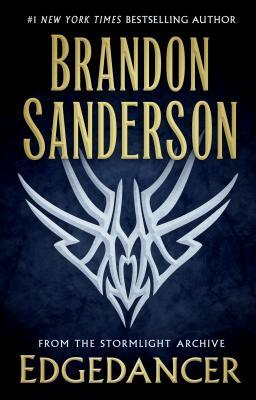

Edgedancer
⭐️⭐️⭐️⭐️
Format: physical ()
This book takes place in between books 2 and 3 of The Stormlight Archive. I (still) really enjoy the minor character from the main series that is written about here. It almost feels like Brandon Sanderson gets to write some Young Adult stuff in the middle of these giant epic fantasy novels. And I laugh at the jokes each time. Although not my first time reading this, previous I read it as part of a larger collection of short stories.
- Previously: Surrender
- Next: Hell's Corner